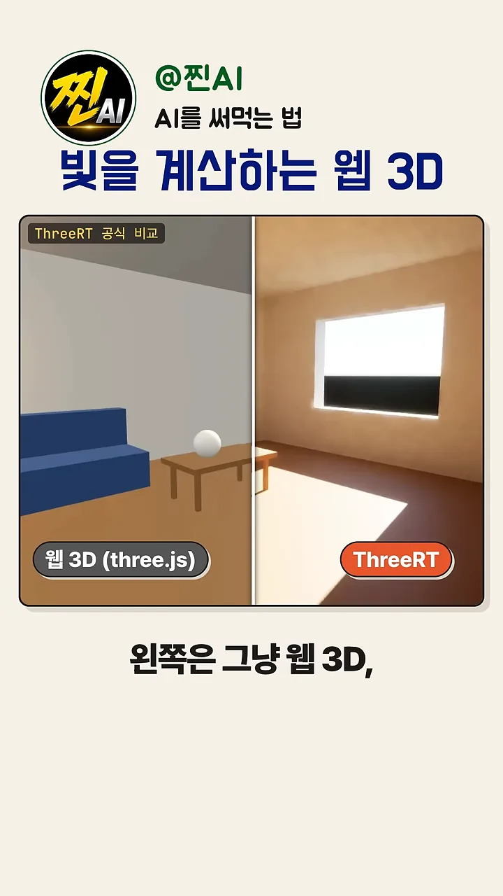
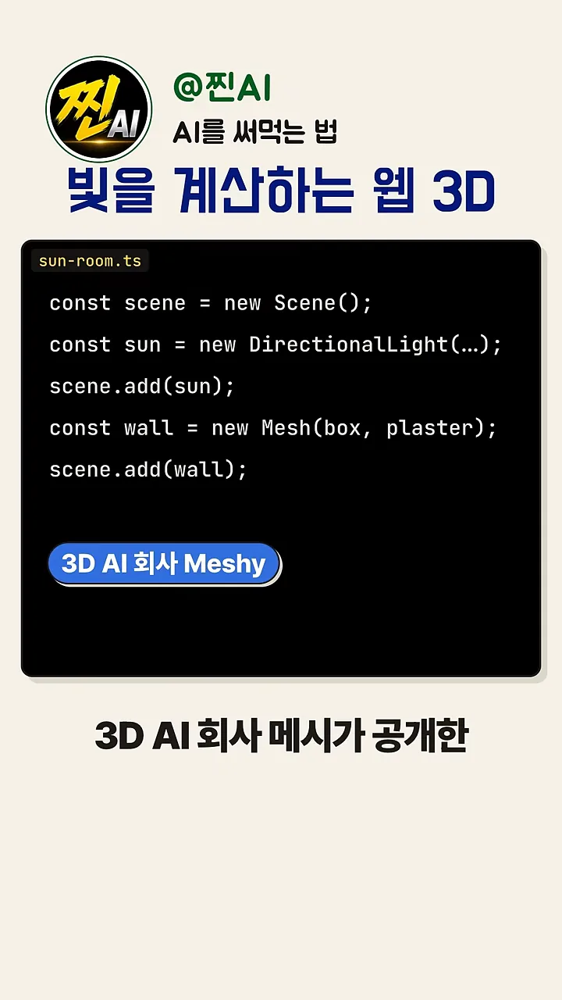
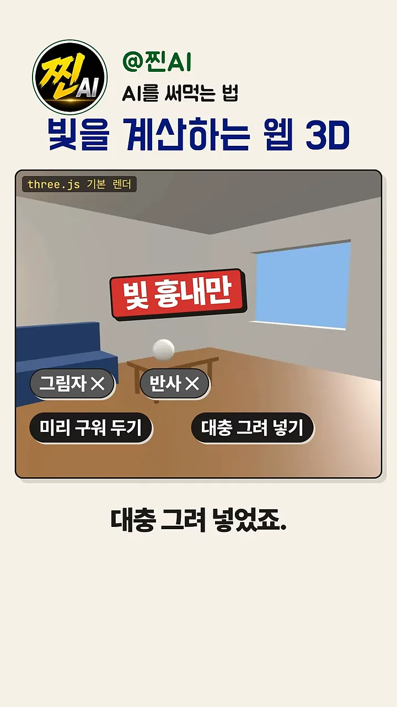
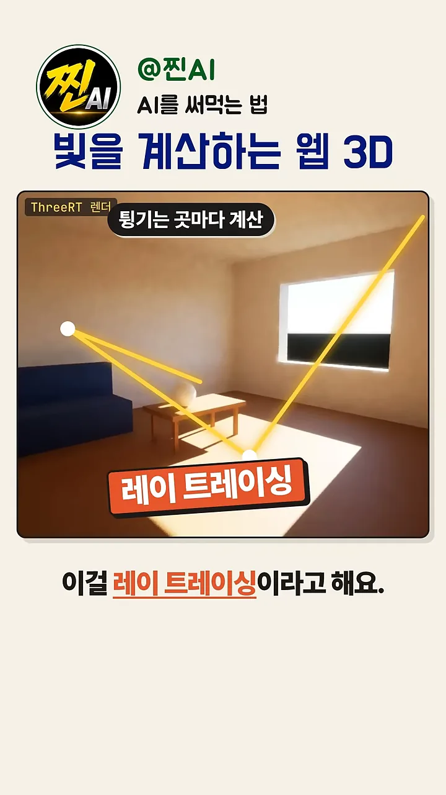
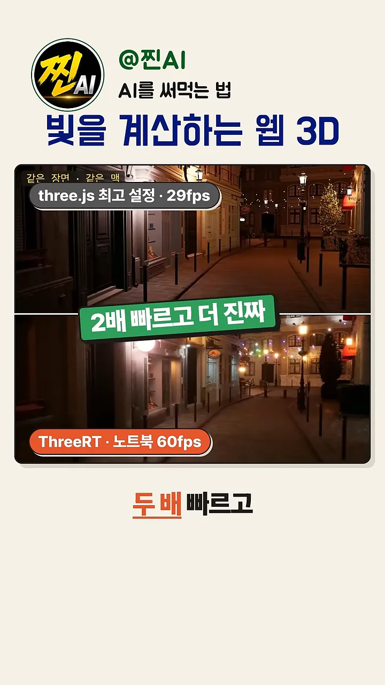
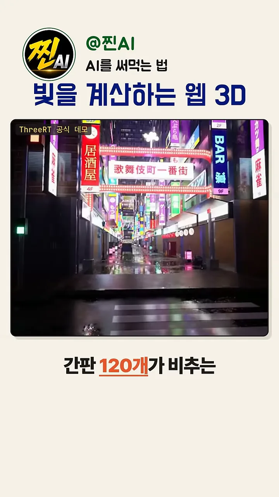
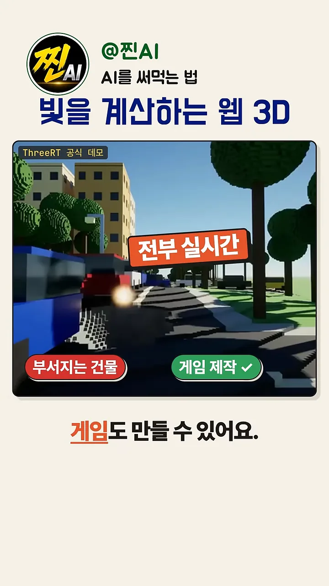
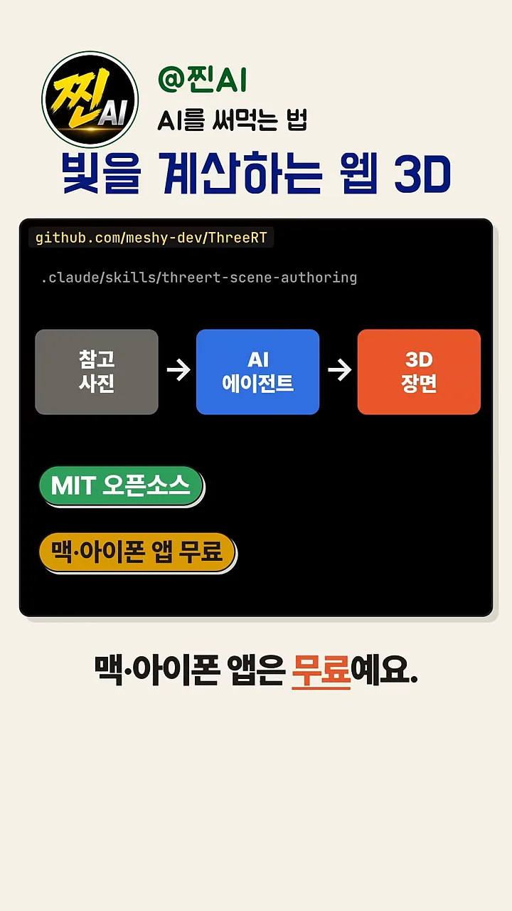

같은 코드, 다른 빛
영상은 방 하나를 세로로 갈라 보여 주며 시작해요. 왼쪽 회색 칸이 three.js로 그린 평범한 웹 3D, 오른쪽 주황빛 칸이 ThreeRT가 빛을 계산한 화면이에요. 오른쪽에서만 창문 햇빛이 바닥에 하얗게 떨어지고, 벽과 천장이 그 빛을 받아 따뜻하게 물들어요.

두 화면의 장면 코드는 똑같아요. 이어서 나오는 sun-room.ts 코드를 보면 new Scene(), new DirectionalLight(…), new Mesh(box, plaster)처럼 three.js에서 쓰던 이름이 그대로 나와요. 아래쪽 파란 라벨이 이 엔진을 만든 곳, 3D AI(Artificial Intelligence) 회사 Meshy예요.

기존 웹 3D는 빛을 흉내만 냈어요
영상은 원래 웹 3D가 빛을 흉내만 냈다고 짚어요. three.js 기본 렌더 화면에는 '그림자 ×', '반사 ×' 표시가 붙어 있어요. 그 아래 두 라벨이 대신 쓰던 방법인데, 하나는 미리 구워 두기(베이킹), 다른 하나는 대충 그려 넣기예요. 그래서 이 화면의 벽은 밋밋한 회색이고, 창문 빛이 바닥까지 닿지 않아요.

레이 트레이싱을 노트북에서 실시간으로
ThreeRT는 빛 한 줄기마다 어디에 튕기는지 다 계산해요. 화면의 노란 선이 빛 한 줄기예요. 창문으로 들어와 바닥에 한 번 튕기고, 다시 탁자 위 공으로 꺾여 가요. 위쪽 라벨 '튕기는 곳마다 계산'이 바로 이 과정이고, 이걸 레이 트레이싱이라고 불러요.

노트북에서 초당 60프레임
레이 트레이싱은 원래 너무 무거워서 실시간으로 돌리기 어려웠어요. 영상은 ThreeRT가 이걸 노트북에서 1초에 60장 그린다고 해요. 같은 밤거리 장면을 위아래로 놓은 비교 화면을 보면, 위쪽 three.js 최고 설정은 29fps, 아래쪽 ThreeRT는 60fps예요. 가운데 초록 띠에 '2배 빠르고 더 진짜'라고 적혀 있어요.

네온 거리, 부서지는 건물, 게임까지
영상은 간판 120개가 비추는 비 오는 거리도 실시간이라고 해요. 이때 화면에는 'ThreeRT 공식 데모' 라벨과 함께 歌舞伎町一番街(가부키초) 간판이 늘어선 젖은 네온 거리가 나와요. 바닥 물웅덩이에 간판 빛이 그대로 비쳐요.

다음 화면은 복셀로 지은 도시예요. 왼쪽 아래 '부서지는 건물', 오른쪽 아래 '게임 제작 ✓' 라벨이 붙어 있어요. 영상은 건물이 부서지는 장면까지 실시간이고, 이 엔진으로 게임도 만들 수 있다고 해요.

에이전트용 스킬과 무료 앱
마지막 화면은 GitHub 저장소 github.com/meshy-dev/ThreeRT 안의 .claude/skills/threert-scene-authoring 폴더를 가리켜요. 가운데 세 칸이 이 스킬이 하는 일이에요. 참고 사진을 AI 에이전트에게 주면 에이전트가 3D 장면을 짜요. 아래 두 라벨은 엔진이 MIT 오픈소스이고, 맥·아이폰 앱은 무료라는 뜻이에요.

영상은 이제 웹 게임도 영화 같은 조명을 쓸 수 있다고 하면서, 내 맥북 팬이 버틸지 묻고 끝나요.